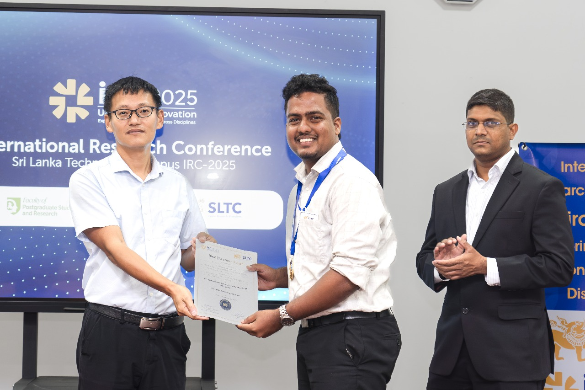
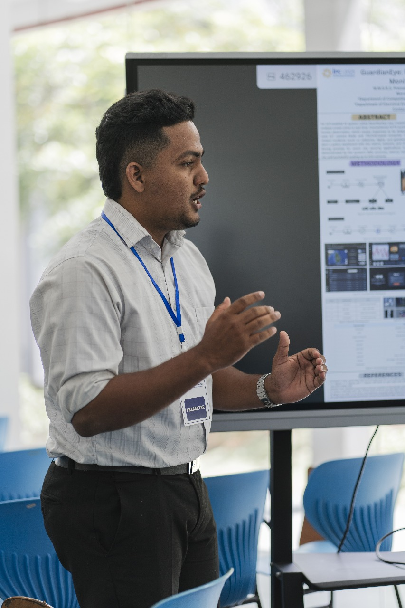
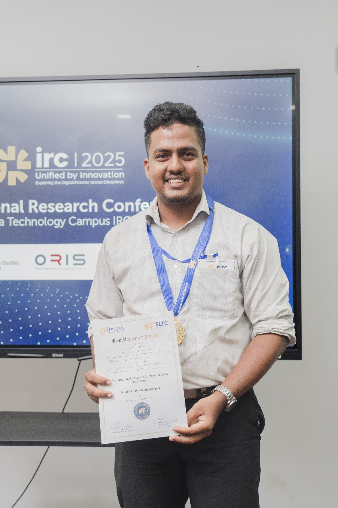
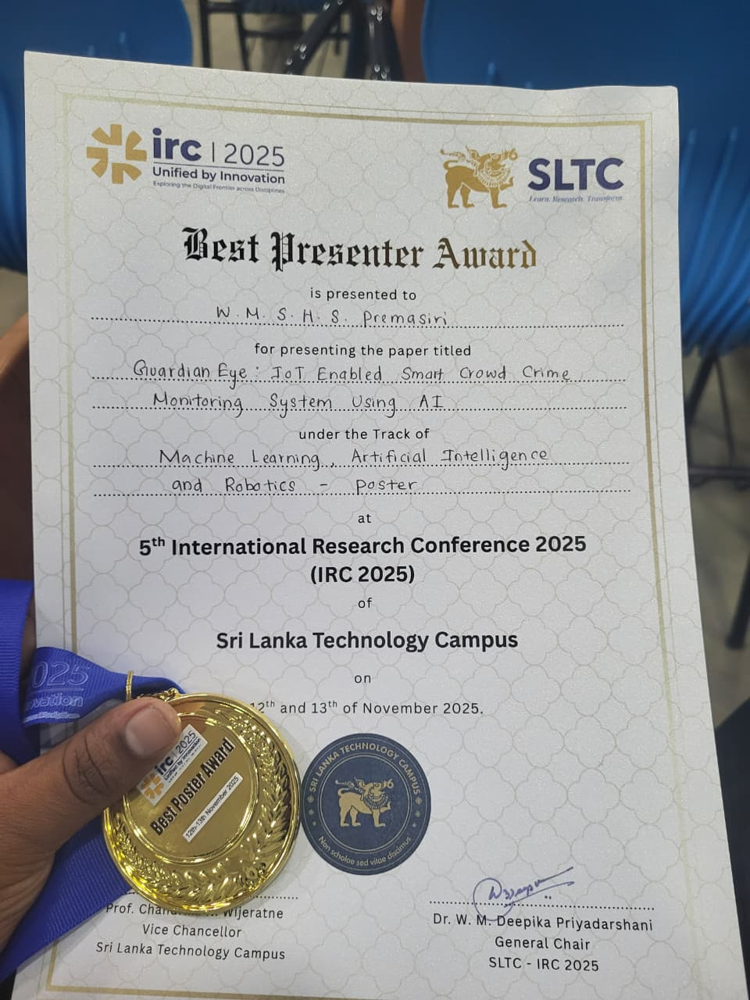
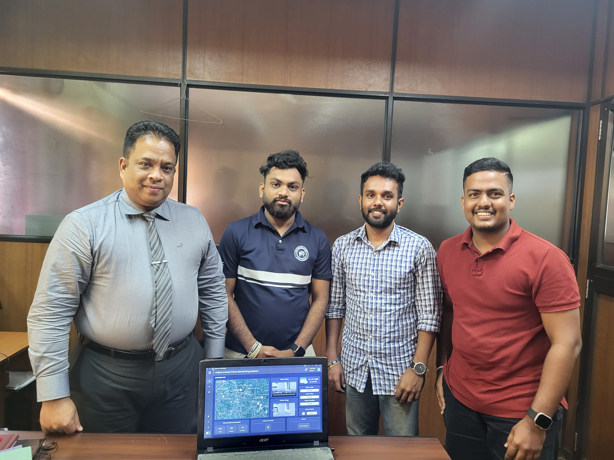

Publications & Awards
My research and academic achievements
Best Presenter & Poster Award - IRC 2025
I am deeply honored and proud to announce a major achievement at the 5th International Research Conference (IRC 2025), hosted by the Sri Lanka Technology Campus (SLTC). My research paper, "Guardian Eye: IoT Enabled Smart Crowd Crime Monitoring System Using AI," earned the prestigious combined recognition of the Best Presenter and Poster Award in the highly competitive Machine Learning, Artificial Intelligence, and Robotics track. This recognition acknowledges both the quality of the research and the delivery of the presentation.
Acknowledgements & Gratitude
This success is the result of collaborative efforts and invaluable guidance. I extend my sincere gratitude to my Supervisor, Ms. Warunika Hippola, and Co-Supervisor, Mrs. Buddima Lakchani, whose continuous mentorship and expertise were fundamental to this project.
I must also recognize the mentors who inspired and supported me: Thank you to Ms. Rusini Siyara Liyanachchi for motivating me to undertake this research paper, and to Ms. Shashipraba Rajakaruna for guiding me onto the correct research path. A special acknowledgment goes to my incredible teammates, Samitha Randika Edirisinghe and Hasarel Bangamuwage, for their dedication and collaborative hard work.
Furthermore, I am grateful for the crucial technical and institutional support provided by DIG Ranmal Kodithuwakku and ASP Nawarathna of the Sri Lanka Police Criminal Record Division, and technical expert Manul Thanura. Your specialized insights were vital to the project's success.
A huge thank you to everyone who supported this project, offered encouragement, and believed in our research—your belief made a difference! Thank you to the IRC 2025 organizing committee for this significant honor. This achievement truly reflects the collective spirit of innovation and collaboration.




